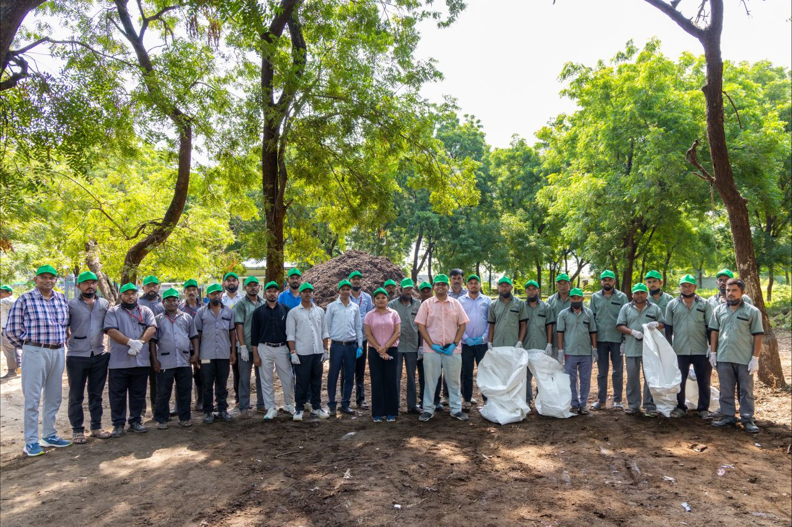
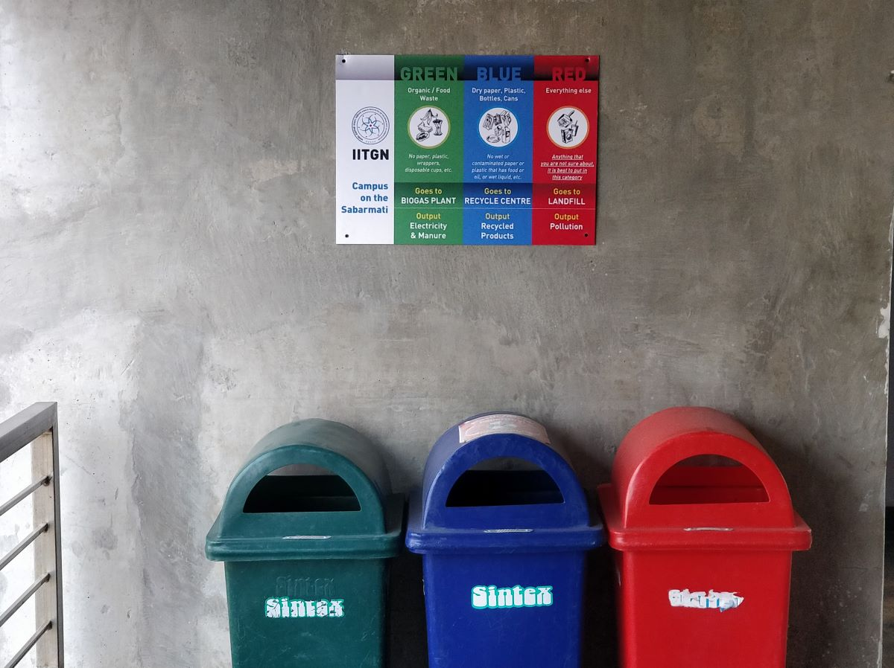
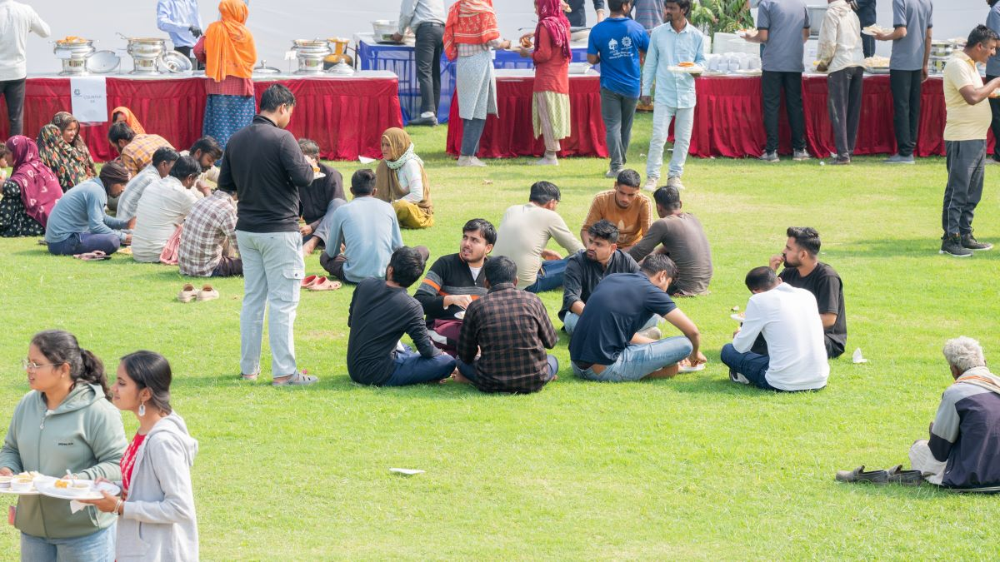
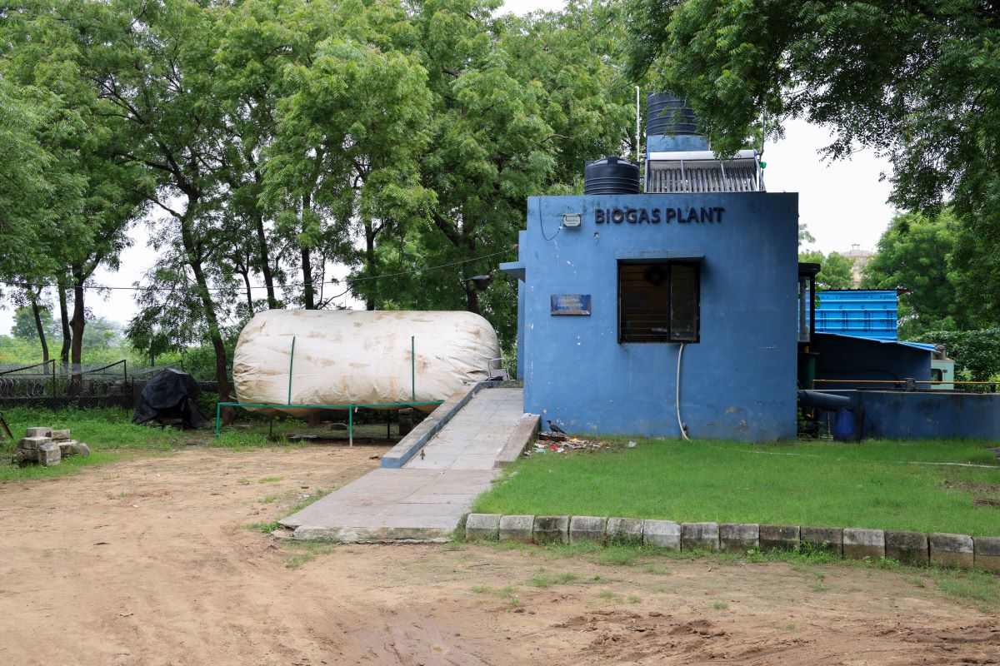
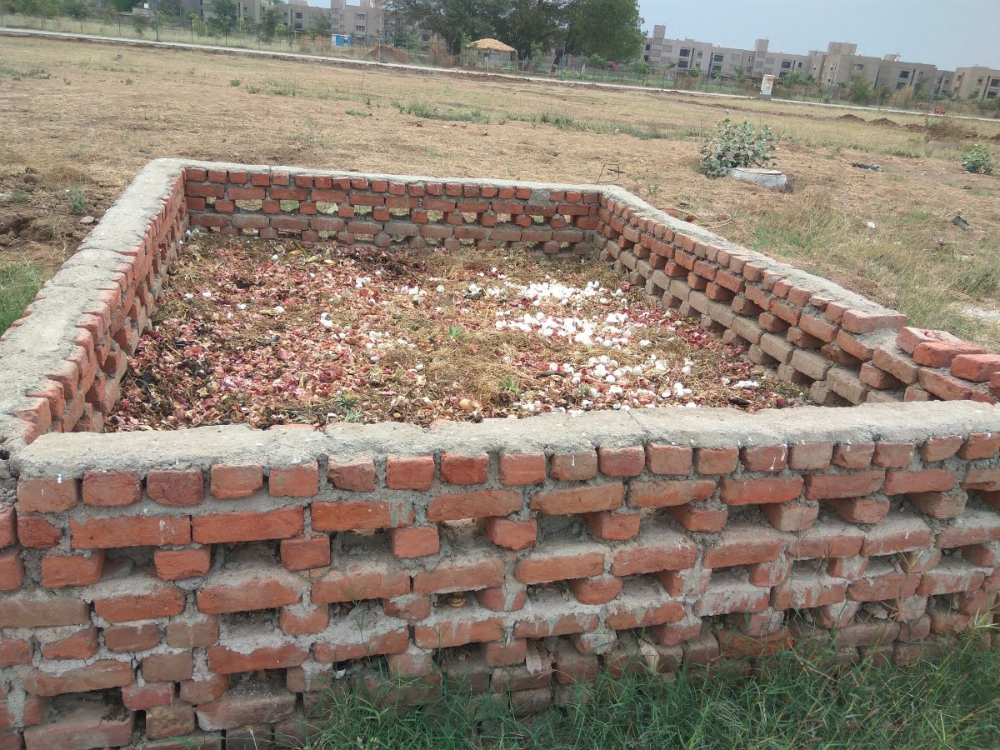

Some Waste Needs Special Care
Sanitary and biomedical waste goes in yellow bags, lab consumables in red, and broken glass in blue. These never mix with everyday waste; an authorised agency collects them for safe disposal.


Every day, IIT Gandhinagar produces about two tonnes of waste. Very little of it is simply thrown away: it is sorted, collected and turned back into energy, compost and recyclable material, right here on campus.

Every building has three bins: green for food and other organic waste, blue for paper, plastic and metal, and red for everything else. Outdoors, you'll find two, green and red. Choose the right one, and you've done the most important step.
Sanitary and biomedical waste goes in yellow bags, lab consumables in red, and broken glass in blue. These never mix with everyday waste; an authorised agency collects them for safe disposal.

Every morning, 13 SWM staff split into four teams and fan out across housing, hostels, dining halls and academic areas. By the end of the day, they've covered the whole campus.

Collection teams fix mix-ups on the spot. At the central facility, dry waste is sorted into more than eight categories so that as much as possible can be recycled.

Wet waste goes to the campus biogas plant, which can handle about a tonne a day. The gas it makes runs a generator that powers the plant itself.

What the biogas plant doesn't take goes to 13 compost pits, mixed with dried leaves from the campus gardens. The compost then feeds the trees and lawns you walk past every day.

Campus eateries and shops don't use plastic for packaging, food delivery or cutlery. The easiest waste to manage is the waste never made.

Zero waste isn't one machine or one team. It's thousands of small choices made at the bin. Sort right, and you help keep IIT Gandhinagar clean, green and waste-free.